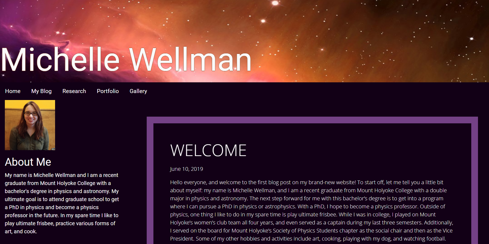
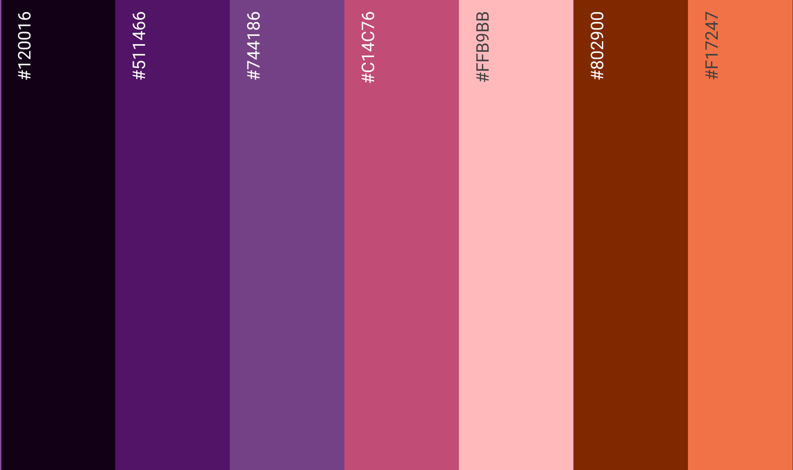

BUILDING MY WEBSITE
February 12, 2020
If you have a website that's been off to a rough start, you have come to the right place. I'm here to talk about how I screwed this website up on my first try and what I did to fix it. Hopefully you won't have to rewrite all of your HTML code from scratch like I did, and that this post will provide you with some helpful hints on web design that I've learned from trial and error.
Old Website
When I first built my website last summer, I made a couple of key mistakes in the design. Here's a screenshot of the old version so you get an idea of what I'm talking about:

Overall this old design isn't too awful, it just made a couple of key mistakes:
First Mistake: The homepage was very text heavy and uninteresting
- This big mistake arose when I decided to put my blog posts on the home page along with my short bio. This resulted in the majority of the page consisting of text, and hiding the rest of the content of the website.
- Nobody wants to be presented with a long reading the second they click on a website. This makes it seem boring and can drive viewers away.
- This design would not have been too bad if I was only interested in sharing a specific kind of content, such as the blog. The problem is that there's a lot more to explore than just the blog.
Second Mistake: The website was not mobile friendly. It looked very poor on any screen smaller than a large tablet.
- This is a big problem in general because most people explore the internet on their mobile devices. A website that does not look right on a phone screen will be less likely to be revisited.
- This was a problem for me in particular because I link to my website on my social media profiles, particularly Twitter and Instagram. Most new viewers to my website will probably be coming from one of these platforms which are primarily used on mobile devices.
New Website
When thinking about the construction of this new version of my website, I focused a lot on the design of the homepage. I wanted to deliver a much better first impression than before.
- I ensured that each piece of text was accompanied by an image to make the content seem more interesting, and to grab the attention of the viewers.
- I continued with the placement of my short bio at the top of the page so viewers are immediately aware of the kind of website they are visiting as well as the content they are about to see.
- The "Latest Content" carousel came about when I decided to have an animated element in the website to grab the viewers' attention.
- This new design frequently uses cards to display content. I found that cards make things look neat while adding a decorative element such as a border. The cards also clearly unify an image with a piece of text.
- On the homepage I used cards as short descriptions for each of the different web pages. The cards include images that give a preview of what someone might see when they view each page.
- Lastly, the homepage is used to set the theme for the website. I went with a dark theme where the background is an off-black, and the colors all came from the Navigation Bar image. I used the app "Color Harmony" to extract colors found in the image and help me generate this palette:

As I mentioned before, making the website mobile friendly is a very important part of the design since so many people browse the internet on their phones. For the most part, making my website mobile friendly consisted of adjusting the layout slightly for different screen sizes, and making sure the images can resize themselves.
- I added pieces of code in the div class that specifies the size of a column for different screen sizes. You can specify the width of a column for screens that are considered "x-small, small, medium, large, and x-large" with x-small being a very small phone screen, small being a smart phone screen, medium being a tablet, large being a laptop or desktop computer, and x-large being a large TV screen.
- In general, I stuck to using only one column for small screens. I found that trying to put design elements next to each other, such as having an image on the left side and text on the right side, did not fit a phone screen well. This would cause the text to look a bit distorted and be a pain to read on a phone.
- Another thing I had to do was to get the sizes of the thumbnails and larger images to adjust for different screen sizes. All this really took was to add the class "img-fluid" to the image tags.
- One challenge I faced in making the website mobile friendly was getting the sizing of the text right. The difficulty arose in making the font sizes look nice on both a large screen as well as a small screen. In order to do this I used the classes "display-1, display-2, etc." provided by Bootstrap. This allows further adjustments of the font sizes for the tags "h1, h2, etc." without having to specify a size in pixels, cm, etc. This makes the text automatically adjust their sizes on different sized screens.
Overall, I'm pretty happy with how this website turned out. It's definitely a lot better than my old one, which I'm proud of. Even if it's not perfect, the improvement is there. I'm still learning a lot about web development and making adjustments to this website as I go. It is a lot of fun and I highly recommend trying this if you enjoy coding, love being creative, and love solving problems!